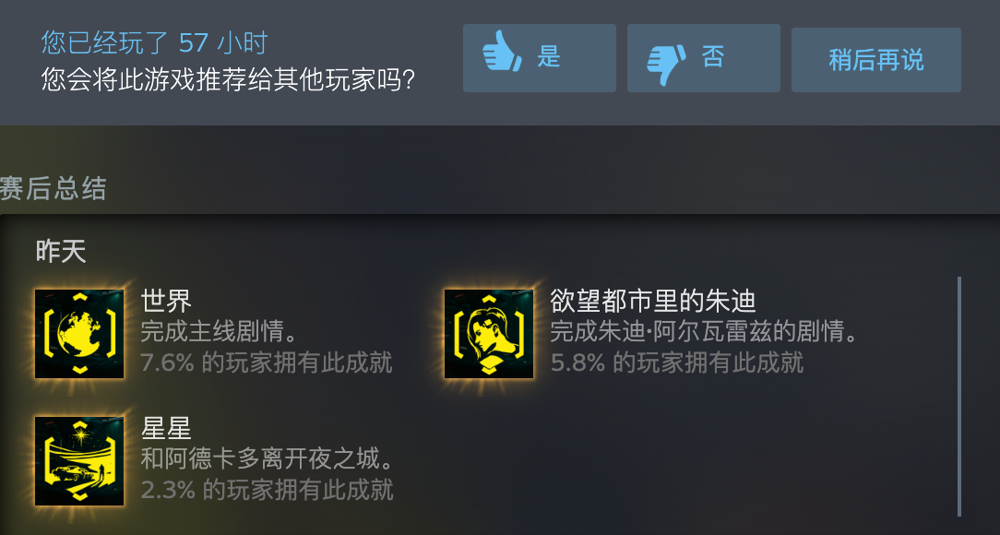

赛博朋克2077通关后的个人想法
刚通关赛博朋克，主线确实出乎意料的短。
说几点想法：
1.这款作品不看名字不看开发者，可以打8.5分，但是它如果叫cyberpunk2077，暂时只能打6分
2.毫无疑问这是半成品，发售日期要到了硬着头皮发售
3.cdpr写剧情的能力确实不错，但在做城市方面，可能钱才是最重要的
4.创造力不足，2077年的城市里，能做的事基本2020年都能做
5.没有达到巫师三的高度
我玩的结局是跟阿德卡多一起出城了，在结局离开夜之城的路上，我回忆整个游戏。整个剧情我觉得太短了，我做完了所有的支线，但是还是撑不起有血有肉的人物。帕南，在打荒坂塔之前给她打电话的感觉就很陌生，也没把朱迪或者那个男警察加进来帮忙，完全没有当年凯尔莫罕一战的气势。